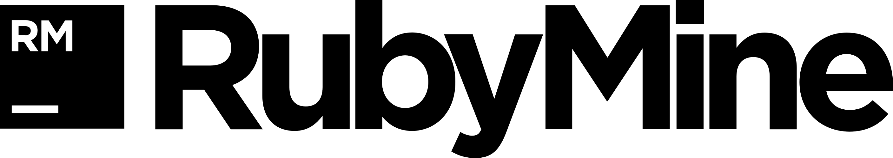

OpenWISP downloads
OpenWISP is not a static project.
The OpenWISP's community contributes daily by developing new functionality, by submitting patches and by opening new issues.
Although the recommended way to download OpenWISP is via GitHub using one of the release tag, here follows a download section with the recent stable releases.
OpenWISP Captive Portal Manager version 0.8.5b
OpenWISP Firmware version 2.0.0b
OpenWISP Geographic Monitoring version 1.1.1b
OpenWISP Manager version 0.9.17b
OpenWISP MiddleWare version 0.0.4b
OpenWISP User management System version 1.1.4t
Please keep in mind that if you wish to contribute to OpenWISP you should use GitHub and:
- fork the application you wish to contribute to;
- add new code respecting as much as possible the code style and formatting conventions used. If you wish to modify existing code please try to isolate as much as possible your modification;
- send us a pull request.
Patches that are submitted individually (i.e., outside github) are likely to be ignored.
Developed with 